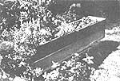
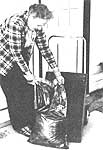
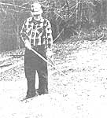
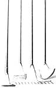
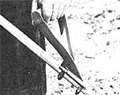
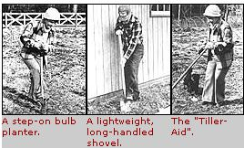

As you pore over garden catalogs and articles, you sometimes get the feeling that cultivating the good earth is an occupation meant only for healthy young adults of unimpaired vigor and physique. Heavy equipment, hard labor, and long hours are implied necessities in ads promoting powerful rotary tillers and 40-foot rows of supremely productive peas and beans. Few commercial garden supply outlets address themselves specifically to the question of elderly or disabled people, yet these represent a sizable proportion of all active or potential tenders of the soil. Indeed, we now have more senior citizens in our society than at any other time in America's history, and the number is growing every year. Many of these elderly people have been gardeners all their lives; others have turned to gardening as a rewarding activity in their retirement years. At the same time, more and more rehabilitation agencies and doctors are recommending gardening as therapy for the handicapped.
Stiff joints, lost limbs, shortness of breath, and other impairments may come with accidents or with the passage of time, but they need not rob anyone of the joys of cultivating green plants. Quite the contrary! The fresh air, the exercise, the challenge of outwitting marauding bugs and birds, and the excitement over the birth of a new tomato or pepper can mitigate these handicaps.
Whether they come upon us suddenly or gradually, physical impairments affect our functioning and our happiness. Coping devices vary, but most people who deal successfully with impairments follow at least three steps: [1] acknowledging the limitations, [2] analyzing the nature of the handicaps-that is, how they affect the way you do thingsand [3] planning how to get around them.
SPOKESPEOPLE
On MOTHER's botanical tour across the country last summer, we met author-gardener Henry Spalding, who told us some of his ideas and techniques for gardening after a heart attack (his article on that topic appeared in the January 1984 issue of Organic Gardening magazine). Meanwhile, writer Thelma Honey contacted us with numerous methods for simplified gardening that she'd developed to accommodate her difficulties in walking. In addition, calls we made to people who have spent a great deal of time working with handicapped men and women produced several other useful pointers and suggestions. So we have a lot of good ideas to share with you.
THELMA HONEY: IN THE LISTS
One's acknowledgement and analysis of physical limitations doesn't have to be formal, but Thelma Honey found that a written assessment of her situation was very helpful, because it compelled her to face her problems objectively. To begin with, she sat down with a pencil and a sheet of paper that she divided into two long columns. In the first column, entitled "I Know I Can", she listed everything positive she could think of about her present abilities. "Talk", was her first entry: "Bore the bugs to death!" Listing the positive aspects first helped to insure the success of the evaluation by giving her confidence and by underscoring her constructive attitude. In the second column she listed her impairments, striving for honesty without morbidness in both title ("Challenges to Be Overcome") and entries ("No. 1: Legs are weak and wobbly").
Once she'd drawn up her lists, Thelma compared that information with her gardening practices and plot design. She soon discovered that a number of things needed altering. Thelma obviously thrives on the written word, because she next set up a new pair of columns ("Right On!" and "Right Off!"), in which she listed those things that could continue to be done in her customary manner and those that would have to be changed.
Thelma quickly realized that her initial problem was an overly large plot. Typical of the enthusiastic gardener, she'd been planting an area bigger than she could manage easily and raising more produce than she could actually use. So she reduced her growing space 50°7o solely by switching to raised-bed intensive gardening. Instead of rows of vegetables, she now has raised beds bordered by railroad ties. The beds are narrow enough to reach across, and each tie provides a convenient seat while she plants and weeds.
Organic mulch eliminates the need for extensive weeding and watering-chores that can be exhausting-and contributes nutrients to the beds as it breaks down. Thelma adds other natural soil builders, too. Each fall she has barnyard manure dug into the soil and then plants a "green manure" crop of annual rye grass, which gets turned under in January. For these two tasks-and anything else that requires heavy equipment or strenuous laborshe recruits outside help.
Thelma gets additional help from the various structures she uses in her garden. Arbors, trellises, and benches all lend support to her wobbly legs. Sturdy fences made of 2 X 4's and 4 X 4's and covered with chicken wire provide places for climbing vines and crops . . . and serve as convenient handholds or restful leaning posts. A fall suffered while she tried to unlock her garden gate prompted Thelma to put a decorative arched trellis at the entrance: This now serves as a safety support and a home for twining plants.
Many fixtures had to be altered. The hose reel had been placed so low that Thelma had to stoop in order to use it; she had it remounted several feet higher on the side of a building near the vegetable beds. (This change was such an improvement that she now wonders why she didn't do it long ago!) She also replaced stoop-and-rummage storage cupboards and boxes with more accessible hooks, shelves, and counters.
To accommodate her reduced agility, Thelma now uses an 18" X 30" garden cart to transport all her garden utensils in one trip. She can load bags of fertilizer or peat moss into the two-wheeled toter without lifting by tilting the front of the cart to the ground and dragging the sacks onto that front panel. Thelma then braces herself against a tree or building for support and leans on the cart's handle to tip it upright. Leaves and debris can be easily raked into-and out of-the cart in the same fashion. The carrier itself is so well balanced that it takes very little effort to move a moderate load.
Thelma uses several homemade devices to simplify her work. A one-gallon plastic jug whose top has been partly cut off-leaving the handle intact-holds her hand tools, small produce, or seeds, and frees her hands for holding onto a support. She lines the cut edge with sturdy duct tape to add strength and prevent her hands from getting scratched, then straps the jug to her waist. When it's time to plant peas, a bright red line painted on each tine of her garden fork at the proper depth simplifies this task considerably. Now, each time she pushes the fork, into the soil to the red lines, she's made four holes, spaced two inches apart and ready for seed. Thelma makes two rows of these holes, spacing the rows about three inches apart, and then goes back to plant the peas, using a 2-1/2' length of 1 " PVC pipe to drop each pea into its hole. By filling the holes and tamping the earth as she walks along, she can plant ten feet of row in as many minutes.
Thelma makes sure that her tools are the correct length for her height and reach, as well as a manageable weight. It doesn't matter how ingenious an implement's design is if it's too heavy or too large to be manipulated comfortably. Thelma also uses her tools in whatever fashion works best for her. She wields a hoe, for example, as she would hold a broom, a technique that eliminates bending and straining the back. [EDITOR'S NOTE: See the sidebar for information on outlets that offer easy-to-use garden implements.]
Another important thing that this Southwestern gardener has realized is that her decreased mobility means she is a prime target for sunburn, or even heat exhaustion and sunstroke. Slacks, calf-length socks, a widebrimmed hat, and longsleeves, with gloves that overlap the cuffs, are all essential attire in Thelma's climate, but the summer sun beats down strongly in the North, as well. Gardeners at all latitudes should be aware of the possible need for protection.
Finally, Thelma takes full advantage of the seats and benches she installed throughout her garden. "Now that I must rest more," she writes, "I find that I enjoy the garden more. Instead of attacking the plants with demonic fury, I take time to savor the floral perfumes wafting on the breeze . . . listen to the chatter of birds . . . marvel at the beauty of an anemone nestled by a rock, or a cloud floating in the sea-blue sky. And even with my slower pace and reduced garden size, the food production is still adequate for my needs."
Henry Spalding is not by nature an "easy does it" sort of person . . . or so it seemed to MOTHER's staffers who-researching our special publication An Array of Gardens visited him in his Northridge, California home last September. Enthusiastic and proud of his achievements, Henry showed us everything, from the corner where he started seedlings to a heavily mulched fencerow covered with succulent melons. Beds of green peppers and caged tomatoes thrived in the wellplanted yard. A tall wooden planter sported a handsome Burpee "Sugar Bush" melon vine that takes up only six feet of growing space. And a pyramid-style redwood container was layered with healthy, young strawberry plants. Henry had good reason to be proud: He was gardening successfully again despite a heart attack, following a few simple rules and exercising his ingenuity more than he was exercising his body.
"Stop before you get tired" and "Grow it up, not out" top Henry's list of gardening maxims. With four potential harvests per year, a vegetable-lover could easily get carried away. Henry's learned better now and curbs his impatience by remembering that one reaches tomorrow by taking care of one's health today. Willing friends and neighbors help with any unavoidable heavy work, but Henry's methods keep such chores to a minimum. He cultivates peas, beans, squash, melons, and cucumbers on simple, sturdy fences, so there's less tilling and weeding to do and no more stooping and crawling around on hands and knees when harvest time comes. He avoids king-size varieties, which are hard to handle and difficult for a small family to consume anyway. When fruits develop close to the ground, Henry sets a can or jar underneath them to avoid spoilage from contact, with the soil. Other fruits seem to have no trouble staying on their vines until ripe.
SUGGESTIONS FROM THE PROS Henry Spalding and Thelma Honey are but two of the thousands of elderly or handicapped people who want to garden. Some, like Henry and Thelma, are ambulatory. Others are wheelchair-bound, have missing limbs, lack full control of their muscular systems, are deprived of sight, or have learning disabilities which prevent them from completing any but the easiest tasks. Several major service organizations can help seriously impaired growers with suggestions, referrals, and even tools and training. These agencies include the following:
Muscular Dystrophy Association
810 Seventh Ave.
New York, NY 10019
Arthritis Foundation
1314 Spring St. N.W.
Atlanta, GA 30309
United Cerebral Palsy Associations
66 E. 34th St.
New York, NY 10016
National Federation of the Blind
1800 Johnson St.
Baltimore, MD 21230
[EDITOR'S NOTE: PRIDE, an agency organized to promote the independence of the disabled and elderly, also proved to be interested, informed, and helpful. Contact the agency at 1159 Poquonnock Rd., Groton, CT 06340; 203/ 4451448.]
Also, help is often available through local hospitals, rehabilitation centers, and universities. In fact, we got some good advice ourselves from Ian Robertson, professor and horticulturist at Warren Wilson College in North Carolina. Ian, who has worked with many handicapped people, points out that growing plants on fences is not appropriate for wheelchair-bound gardeners, who can't reach down to young seedlings or up to fullgrown climbers. A better solution lies in container planting, especially when the plant holders are round and raised about two feet off the ground. Sections of chimney flue or concrete drainpipe, wooden barrels cut in half, and heavy plastic or metal drums lend themselves to a wheelchair garden, since all are fairly simple to obtain, can be cut to the proper height, are easy to circle around, and hold a satisfying number of plants. Soilless media-being lightweight, sterile, and properly mixed for good drainage-make such containers easier to move and to care for. They require only periodic additions of fertilizer.
Although specialized garden tools are available from custom design outlets, and some handicapped people need sophisticated prosthetic devices, many disabled gardeners who lack funds for such custom-made help can get by quite well with modified standard implements. Barbecue utensils are precisely what the doctor ordered for some gardening tasks: They are lightweight and long-handled, and, if necessary, they can even be strapped onto the arm for easy manipulation. And they are inexpensive.
Some people can't bend or kneel for any length of time. Such gardeners should know that a step-on bulb planter, which creates a hole about 2-1/4" in diameter and 6" deep and removes the soil when it's withdrawn from the ground, is a great tool for planting not only tulips and daffodils but also potatoes. Then too, someone who can visit the garden daily might find it even easier to plant potatoes on the ground or in shallow trenches and keep them thoroughly covered with a heavy layer of mulch to prevent sunlight from striking the tubers.
A SUMMARY OF IDEAS Everyone ages. Many of us have or will develop physical handicaps unrelated to aging. If we want to continue gardening-or get into it for the first time-what can we do to make it easier and more rewarding? Well, here's a list (another one, Thelma!) of 20 suggestions from our various contacts:
[ 1 ] Make a smaller garden plot.
[2] Grow fewer vegetables.
[3] Use raised beds rather than long rows.
[4] Mulch wherever possible.
[5] Use fences, trellises, and poles, and have plants climb up rather than sprawl out.
[6] Use free-standing planters-raised to work level, if possible.
[7] Grow smaller varieties rather than kingsize ones.
[8] Quit working before you get tired.
[9] Move slowly and easily. It's better to do a little something every day than try to do everything at once.
[10] Accept help from friends and neighbors for unavoidable heavy tasks.
[11] Think of fences and other structures as both handholds and plant supports.
[12] Use a well-balanced cart to transport things whenever possible.
[13] Carry hand tools, seeds, and small amounts of produce in a waist-strapped, cutout plastic gallon jug.
[14] Use PVC pipe to plant seeds.
[15] Paint lines on garden implements to mark planting depth.
[16] Use garden fork tines to make seed holes.
[17] Raise garden tool storage places and items such as the hose reel to a higher level.
[18] Use kitchen or barbecue tools when length and lightness are required.
[19] Use a step-on bulb planter to make holes for larger items such as bulbs, corms, and tubers.
[20] Put resting places at various spots around the garden . . . and use them.
IN TOUCH WITH LIFE
Gardening can give those who participate a rich sense of achievement and worth, an understanding of the awesome creative power of nature, and an identification with the beauty and wonder of the world around us. Underlying the simple joys of digging and rooting, breathing the fresh air, and listening to the sounds of birds and the wind in the leaves, is the deeper joy of life's affirmation. It should not be denied to anyone-and certainly not for lack of the tools and techniques with which to pursue it.
Sources
There are now quite a few tools on the market that have been especially modified for people who are infirm or physically disadvantaged in some way. Smith & Hawken (Dept. TMEN, 25 Corte Madera, Mill Valley, CA 94941) carries several kinds of such implements, including a line of superlight tools made of aluminum, which are good for easy maintenance work (see photograph). The company's twowheeled cart weighing only 17 pounds is particularly easy to roll around the garden and tips its contents with little effort. The Gardena Combisystem is an entire tool system with detachable heads (hoe, cutter, mattock, furrower, rake, broom, spreader, and cultivators) that attach to matching handles of varying lengths; the Combisystem also features hand tools that may be affixed to a 30" extension handle. A long reach is also provided by a 5' pruner and flower picker, a 24" trowel and hand fork, and a scissorstyle scooper that allows one to pick up leaves and debris in small quantities without stooping over. Gardener's Eden (Dept. THEN, P.O. Box 7307, San Francisco, CA 94120) offers both a long-handled weeder and a leaf bagger.
Gardens forAll (Dept. TMEN, 180 Flynn Ave., Burlington, VT 05401) offers a set oflightweight tools: a weeder, a shovel, and a three pronged cultivator; a "Magic Handle" (see photograph), which helps take the back strain out of raking and hoeing; a "Tiller Aid" (see photograph), which assists the gardener in forking up the soil; and even an "Automatic Digger" with a spring-lever mechanism. This organization puts out a fine monthly, Gardens for All Newsmagazine (subscription rate $15 per year; a sample copy is available for $1.00). Its editors are also preparing a 44 page book, Tools and Techniques for Easier Gardening, which will cover at least 75 tools and products and should be available by the time you read this article. The projected price of the publication is $3.00, prepaid, which includes shipping and handling. As fans of the Gardens for All Newsmagazine, we're looking forward to this new effort. People who need something more individualized than either the standard tools or those somewhat modified versions mentioned above might want to contact The National Institute for Rehabilitation Engineering (97 Decker Rd., Butler, NJ 07405; 201/8382500) for information about customized implements of all kinds, including those meant specifically for gardening.
|
 Burpee's "Sugar Bush" watermelon thrives in this raised wooden planter in Henry D. Spalding's yard . . . Thelma Honey loads her tip-tilted garden cart . . . Raking is easier with a Magic Handle" attachment. |
 Four superlight aluminum tools from Smith & Hawken. |
 A close-up of the "Magic Handle" on an aluminum rake. |
|
 |
 |
 |